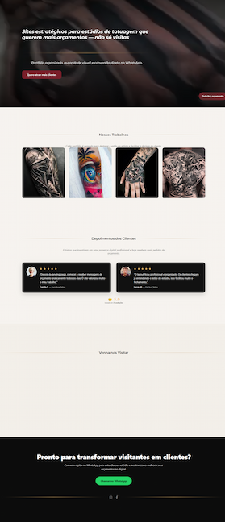

Landing Page para Estúdio de Tatuagem
Landing page para estúdio de tatuagem, focada em portfólio e orçamentos via WhatsApp.
- Portfólio visual completo
- Orçamentos rápidos pelo WhatsApp
- Depoimentos e prova social
- Layout otimizado para mobile
Preço: R$ 840
Voltar para a home